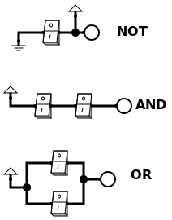

We mentioned before that there is nothing inside the
computer except switches. Switch can be either ON or OFF.
So we use binary system to represent information inside the computer.
Now we will learn how to work with binary information.
It is called Boolean logic (or Boolean algebra) after George Boole,
who invented it in 19th century.
Logic here means reasoning about statements which can be
either true or false. True and false are two possible values of
a Boolean variable. True is usually denoted as 1, and false as 0.
Only possible values in Boolean logic are True (written as 1) and
False (written as 0).
Statements about something can either be true or false. In Boolean logic
there is no "I don't know" alternative.
"User is logged in" is either true or false.
Most common statements are "voltage is high" (true,1) or "voltage is low" (false,0).
If we are working with statements like "voltage is high" or "voltage is low",
it is easy to represent them using switches. Switch ON means voltage is high (true,1),
switch OFF means voltage is low (false,0).
But statements can be more abstract as well, like "User is logged in" or
"File exists on disk". These statements can also be either true or false.
Question is how to work with these statements. How we can derive configuration
of switches, which for example, adds two binary numbers together?
Logical operations.
It is fascinating that we can build any logical operation using just
three basic operations: AND, OR and NOT.
Mechanical analogy
Lets make a circuit with switches. Each switch can be either ON or OFF.
We can represent ON as 1 (true) and OFF as 0 (false).
Switches can be connected in different ways. Shown below are three basic ways,
light bulb will be ON or OFF depending on the configuration of the switches.

A switch can be either ON (1) or OFF (0).
NOT:
Switch ON = 1 (True)
Switch OFF = 0 (False)
AND:
Both switches ON = 1 (True)
Any switch OFF = 0 (False)
OR:
Any switch ON = 1 (True)
Both switches OFF = 0 (False)
Here is a circuit:
Notice wording here.
We say "Both switches ON" for AND operation:
(Switch1 is ON) AND (Switch2 is ON)
If either switch is OFF, the result is OFF.
We say "Any switch ON" for OR operation:
(Switch1 is ON) OR (Switch2 is ON)
If both switches are OFF, the result is OFF.
If either switch is ON, the result is ON.
We say "Switch is OFF" for NOT operation: NOT (Switch1 is ON)
AND, OR and NOT are logical operations.
Transistor level circuit
As there are not billions of small people inside the computer watching the light
bulbs and flipping the switches, we show the electrical representation of the same
circuit:
You can download the circuit files here:
These circuits are for information only. You don't need to build or memorize them.
As you can see we used 2 transistors for NOT operation, 6 transistors for both AND
and OR operations. Transistors are the real switches inside the computer.
Of course, once you design the circuit, you don't need to build it using transistors
every time. You can just use logic gate symbols to represent the same operations.
AND Gate operation.
We can construct more complicated statements using logical operations.
For example, we have two statements:
A = "User is logged in
B = "User is an admin"
It can be good idea to allow user to proceed only if both of these statements are True.
Or put it another way, statement A is true (A=1) AND statement B is True (B=1) as well. AND here stands for a logical operation, not just a word.
We denote first statement (User is logged in) as A. A can be either True(1) or False(0).
Second statement ()
Obviously, only if both statements are true, we can allow user to proceed.
Truth Table is a table, which contains all possible combination of statement values (each is either
true or false) and one more column for result of the compound statement.
We can have a look at the truth table for AND operation:
Truth table of AND
A: User is logged in
B: User is an admin
A AND B
0
0
0
0
1
0
1
0
0
1
1
1
Truth table is one way to describe logical operation. But it would be tedious
to draw table every time. Sometimes you have to do that, but usually there are
better options.
AND as a formula
Recall that True and False are denoted as 1 and 0. It computes to represent
AND as multiplication. It makes sense, because multiplication
is only true (non-zero) if both arguments are non-zero. So we can write:
\[ A \; AND \; B = A \cdot B \]
Notation with dot for multiplication is standard in mathematics.
In Boolean logic is very convenient as well - only if both A and B are 1 (true),
the result is 1 (true). In all other cases the result is 0 (false
It is just notation, but it is very convenient. For example,
if we have three statements: A, B and C, we can write:
\[A \; AND \; B \; AND \; C = A \cdot B \cdot C\]
It is much easier to write and read than drawing truth table every time.
AND as an electrical circuit.
If statements A and B are about voltage levels, we can represent
AND as electrical circuit.
AND is represented as :
AND gate.
And here is the circuit file you can download and open with
Logisim Circuit Simulator:
OR operation.
Another logical operation is OR. We have two statements:
A = "Engine temperature is above safety"
B = "Oil pressure is low"
is any of these statements is true, it can be good idea
to turn engine off.
Truth table for OR operation:
A
B
A OR B
0
0
0
0
1
1
1
0
1
1
1
1
OR as a formula
We can represent OR operation as addition. It makes sense, because
addition is only false (zero) if both arguments are zero. So we can write:
\[ A \; OR \; B = A + B \]
Notation with plus for addition is standard in mathematics.
In Boolean logic is very convenient as well - only if both A and B are 0 (false),
the result is 0 (false). In all other cases the result is 1 (true).
It is just notation, but it is very convenient. For example,
if we have three statements: A, B and C, we can write:
\[A \; OR \; B \; OR \; C = A + B + C\]
This notation breaks down if the sum is greater than 1, but in Boolean logic
we only care about whether the result is 0 or non-zero (1).
In Boolean logic we have this statement:
\[ 1 + 1 = 1 \]
what is not true in normal arithmetics, but it is true in Boolean logic.
OR as an electrical circuit.
OR gate.
A bit of mnemonic to help remember the shape of OR gate - it looks like a rocket ship
And there is a rocket ship going ORbit. :). At also has curved bit, which looks
like part of an "O"
And here is the circuit file you can download and open with
Logisim Circuit Simulator:
NOT operation.
Another logical operation is NOT. It takes only one argument.
"User is NOT logged in" is true if user is not logged in.
Truth table for NOT operation:
A
NOT A
0
1
1
0
NOT as a formula
We can represent NOT operation as:
\[ NOT \; A = \overline{A} \]
Notation with overline for NOT operation is standard in Boolean logic.
In Boolean logic is very convenient as well - if A is 0 (false),
the result is 1 (true). If A is 1 (true), the result is 0 (false).
NOT as an electrical circuit.
NOT gate.
And here is the circuit file you can download and open with
Logisim Circuit Simulator:
Composite logic operations.
So far we learned three basic logical operations: AND, OR and NOT.
Using these operations we can build more complicated logical statements.
For example, we have three statements:
A = "User is logged in"
B = "User is an admin"
C = "User is a moderator"
We want to allow user to proceed with elevated privileges only if :
(user is logged in) AND
(user is an admin) OR (user is a moderator)).
We can write Truth Table if we want to take a look at all possible combinations
of statement values and make sure that we did not miss something. It will be quite big - we have three statements,
each can be either true or false, so we have 2x2x2=8 combinations of statement values.
Truth table for A,B,C
A= "User is logged in"
B= "User is an admin"
C= "User is a moderator"
Proceed?
0
0
0
0
0
0
1
0
0
1
0
0
0
1
1
0
1
0
0
0
1
0
1
1
1
1
0
1
1
1
1
1
This truth table is useful, but it is hard to read and implement. We need
some formula and circuit for this statement.
After scratching your head for a while, you can see that this statement
can be represented as combination of AND and OR operations.
\[ A \; AND \; (B \; OR \; C) = A \cdot (B + C) \]
We can draw truth table for this statement, but it will be quite big -
we have three statements, each can be either true or false,
so we have 2x2x2=8 combinations of statement values.
Composite logic circuit for A AND (B OR C)
Composite logic circuit for A AND (B OR C)
And here is the circuit file you can download and open with
Logisim Circuit Simulator:
Scratching your head part is optional. Better we avoid it altogether
and come with systematic and fixed way to derive formulas and circuits.
That is subject of next lecture.